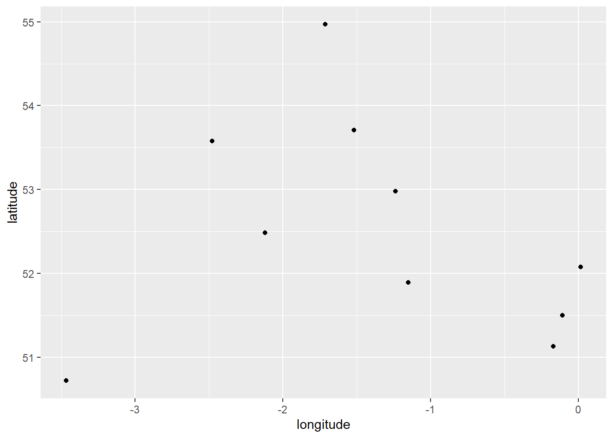
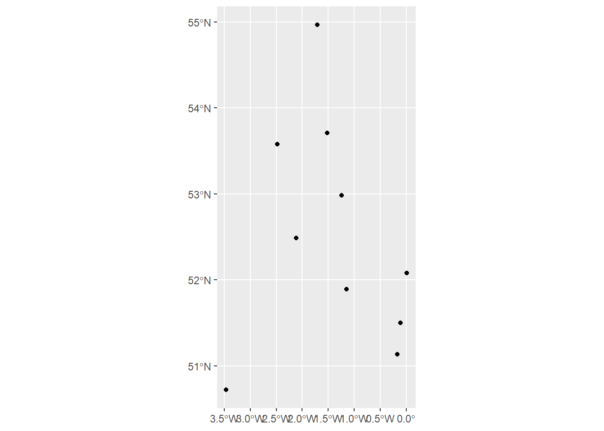
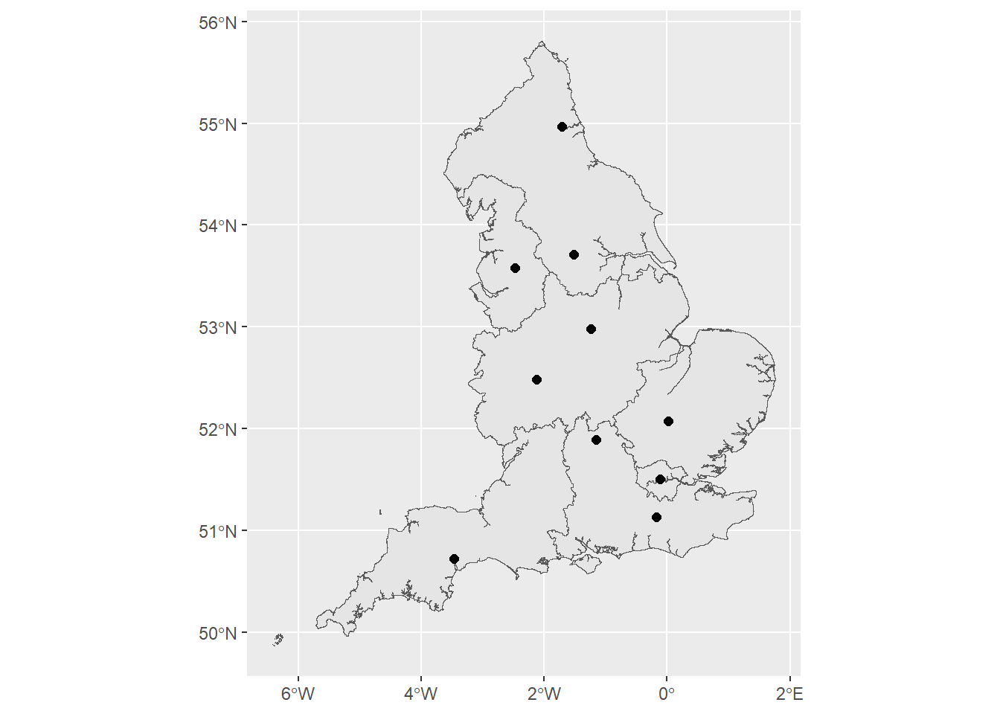
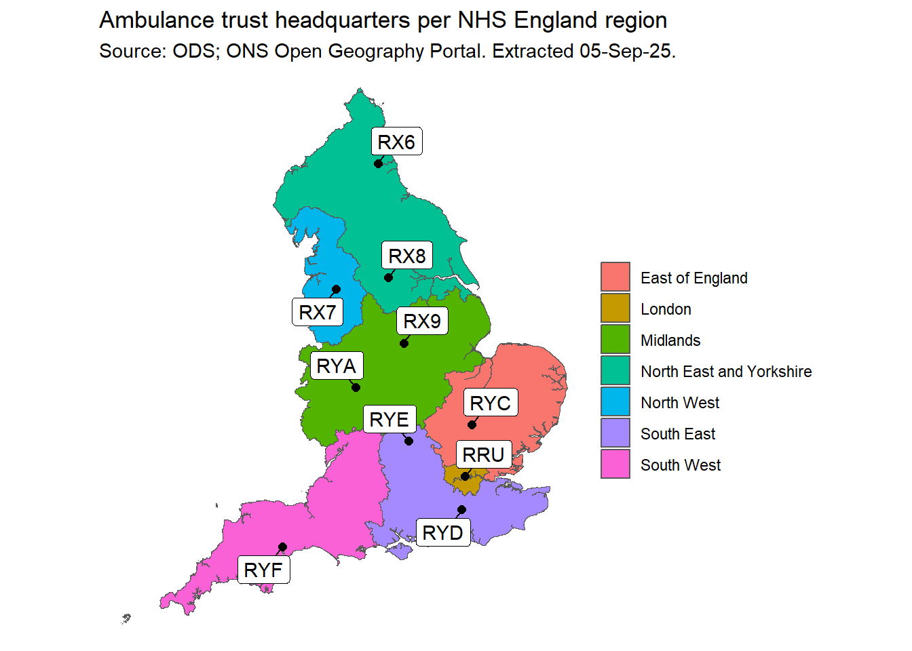

trusts <- c('RYC', 'RX9', 'RRU', 'RX6', 'RX7',
'RYE', 'RYD', 'RYF', 'RYA', 'RX8')Plotting postcodes
Suppose we have some list of NHS organisations and we want to plot them. We start with a list of trust ODS codes:
We can obtain their postcodes via the ODS API:
library(httr)
library(tidyverse)
ods_url <- 'https://uat.directory.spineservices.nhs.uk/ORD/2-0-0/organisations/'
postcode_table <- lapply(trusts, function(x){
query <- paste0(ods_url, x)
content <- content(GET(query))
postcode <- content$Organisation$GeoLoc$Location$PostCode
tibble(org_code = x,
postcode = postcode)
}) |> bind_rows()
postcode_tableWe can then use the PostcodesioR package to obtain the geographic details of these postcodes, and join this back to our original data:
library(PostcodesioR)
postcodes_lookup_table <- lapply(postcode_table$postcode, PostcodesioR::postcode_lookup) |>
bind_rows() |>
right_join(postcode_table, by = c('postcode' = 'postcode'))
postcodes_lookup_tableThis gives us a host of information - most helpfully, for postcodes, latitude and longitude coordinates. We could, if we wanted, plot these easily:
ggplot(postcodes_lookup_table) +
geom_point(aes(x = longitude, y = latitude))
However, a grid of coordinates alone is not very meaningful. Instead, we can convert it into a ‘simple features’ (sf) object:
library(sf)
trusts_sf <- sf::st_as_sf(postcodes_lookup_table, coords = c('longitude', 'latitude'),
crs = 4326)
ggplot(trusts_sf) +
geom_sf(size = 1.5)
We can see that our latitude and longitude have been interpreted as geospatial data and not just numbers. However, that’s still not much use without a map, which we can source from the ONS geoportal. Here I have taken the NHS England Regions 2024 boundary file, but the specific file you need will depend on your use case. We need the link to download the GeoJSON, which is found under the ‘View API Resources’ section of the file page:
geojson <- 'https://services1.arcgis.com/ESMARspQHYMw9BZ9/arcgis/rest/services/NHS_England_Regions_January_2024_EN_BFC/FeatureServer/0/query?outFields=*&where=1%3D1&f=geojson'
nhse_regions <- sf::st_read(geojson)Reading layer `OGRGeoJSON' from data source
`https://services1.arcgis.com/ESMARspQHYMw9BZ9/arcgis/rest/services/NHS_England_Regions_January_2024_EN_BFC/FeatureServer/0/query?outFields=*&where=1%3D1&f=geojson'
using driver `GeoJSON'
Simple feature collection with 7 features and 10 fields
Geometry type: MULTIPOLYGON
Dimension: XY
Bounding box: xmin: -6.418667 ymin: 49.86467 xmax: 1.763706 ymax: 55.81109
Geodetic CRS: WGS 84ggplot() +
geom_sf(data = nhse_regions) +
geom_sf(data = trusts_sf, size = 2)
We can improve this plot in the usual way by adjusting the arguments to ggplot:
ggplot() +
geom_sf(data = nhse_regions, aes(fill = NHSER24NM)) +
geom_sf(data = trusts_sf, size = 2) +
ggrepel::geom_label_repel(
data = trusts_sf,
aes(label = org_code, geometry = geometry),
stat = 'sf_coordinates',
min.segment.length = unit(0, 'lines'),
) +
theme_minimal() +
labs(title = 'Ambulance trust headquarters per NHS England region',
subtitle = 'Source: ODS; ONS Open Geography Portal. Extracted 05-Sep-25.',
fill = '',
x = '',
y = '')